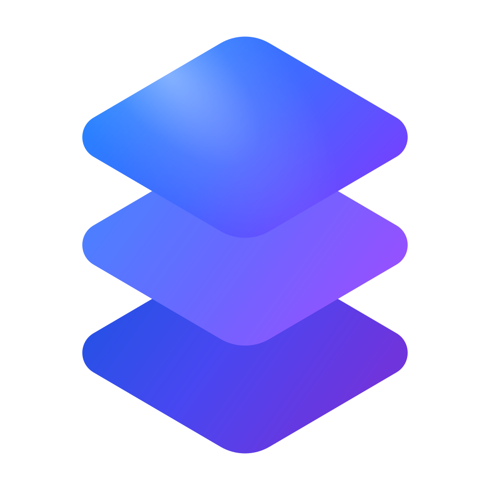

生成脱敏故障报告，读取被引用的历史会话，并保留必要的任务上下文。
故障诊断 · 会话引用
BRAIN SYSTEM PLUGIN
系统能力，随工作流就位
把故障诊断、会话上下文、交付登记、消息附件、项目看板和插件开发工具集中为一组始终可用的内置能力。
必装系统插件8 项内置 Skill自动安装且不可卸载
01 / 核心能力
覆盖诊断、协作与扩展
按任务需要自动选择对应 Skill，不增加额外连接步骤。
登记文件、链接、分支等会话产物，发送渠道附件，并读取项目看板事项。
产物登记 · 附件发送 · 看板创建和校验原生 Plugin、市场 Skill，并在适合时提供交互式可视化界面。
Plugin · Skill · 可视化02 / 工作方式
目标直接进入执行链路
- 01识别任务
根据诊断、引用、交付或创建需求匹配对应能力。
- 02安全执行
遵循当前 Workspace 权限与路径边界处理数据。
- 03返回结果
把文件、链接和结构化结果交付到当前会话。
03 / 示例请求
可以直接这样说
“诊断当前故障并生成一份可分享的脱敏报告。”
“读取引用会话，总结关键决策和未完成事项。”
“创建一个包含 Skill 和 MCP 的原生 Plugin。”